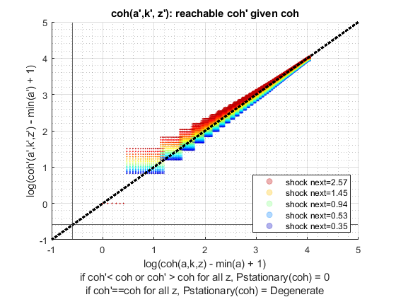

Derive Distributions for Risky + Safe Asets + Interpolated Distribution (Analytical)
back to Fan's Dynamic Assets Repository Table of Content.
Contents
- FF_IWKZ_DS finds the stationary asset distributions
- Default
- Parse Parameters
- Start Profiler and Timer
- A. Get Size of Endogenous and Exogenous State
- B. Solve for Index
- C. Expand Index so Matches Full States Index Dimension
- D. Transition Probabilities from (M by M) to (NxM) by M
- E. Fill mt_pol_idx_mesh_idx to mt_full_trans_mat SPARSE
- F. Stationary Distribution Method A, Eigenvector Approach
- G. Stationary Vector to Stationary Matrix in Original Dimensions
- End Time and Profiler
- f(y), f(c), f(a), f(k): Generate Key Distributional Statistics for Each outcome
function [result_map] = ff_iwkz_ds_vecsv(varargin)
FF_IWKZ_DS finds the stationary asset distributions
Building on the Two Assets Two-Step Interpolated Dynamic Programming Problem ff_iwkz_vf_vecsv, here we solve for the asset distribution. This version of the program is semi-analytical.
This is the two-stage with interpolation version of ff_akz_ds_vecsv. See that file for additional descriptions and comparisons. These two functions are nearly identical
The code here works when we are looking for the distribution of f(a,z), where a'(a,z,z'), meaning that the a next period is determined by a last period and some shock last period as well as shock this period. a here is cash-on-hand. This contrasts with ff_az_ds_vecsv, which works for a'(a,z), a' can not be a function of z'.
@example
% Get Default Parameters
it_param_set = 6;
[param_map, support_map] = ffs_az_set_default_param(it_param_set);
% Change Keys in param_map
param_map('it_w_n') = 750;
param_map('it_ak_n') = param_map('it_w_n');
param_map('it_z_n') = 11;
param_map('fl_a_max') = 100;
param_map('fl_w') = 1.3;
% Change Keys support_map
support_map('bl_display') = false;
support_map('bl_post') = true;
support_map('bl_display_final') = false;
% Call Program with external parameters that override defaults
ff_iwkz_ds_vecsv(param_map, support_map);@include
@seealso
- derive distribution f(y'(y,z)) one asset loop: ff_az_ds
- derive distribution f(y'({x,y},z)) two assets loop: ff_akz_ds
- derive distribution f(y'({x,y},z, z')) two assets loop: ff_iwkz_ds
- derive distribution f(y'({y},z)) or f(y'({x,y},z)) vectorized: ff_az_ds_vec
- derive distribution f(y'({y},z, z')) or f(y'({x,y},z, z')) vectorized: ff_iwkz_ds_vec
- derive distribution f(y'({y},z)) or f(y'({x,y},z)) semi-analytical: ff_az_ds_vecsv
- derive distribution f(y'({y},z, z')) or f(y'({x,y},z, z')) semi-analytical: ff_iwkz_ds_vecsv
Default
Program can be externally invoked with az, abz or various other programs. By default, program invokes using az model programs:
- it_subset = 5 is basic invoke quick test
- it_subset = 6 is invoke full test
- it_subset = 7 is profiling invoke
- it_subset = 8 is matlab publish
- it_subset = 9 is invoke operational (only final stats) and coh graph
params_len = length(varargin); bl_input_override = 0; if (params_len == 6) bl_input_override = varargin{6}; end if (bl_input_override) % if invoked from outside override fully [param_map, support_map, armt_map, func_map, result_map, ~] = varargin{:}; else % default invoke close all; it_param_set = 8; st_akz_or_iwkz = 'iwkz'; bl_input_override = true; % 1. Generate Parameters [param_map, support_map] = ffs_akz_set_default_param(it_param_set); % Note: param_map and support_map can be adjusted here or outside to override defaults % param_map('it_w_n') = 50; % param_map('it_z_n') = 15; param_map('st_analytical_stationary_type') = 'eigenvector'; % 2. Generate function and grids [armt_map, func_map] = ffs_akz_get_funcgrid(param_map, support_map, bl_input_override); % 1 for override % 3. Solve value and policy function using ff_iwkz_vf_vecsv if (strcmp(st_akz_or_iwkz, 'iwkz')) [result_map] = ff_iwkz_vf_vecsv(param_map, support_map, armt_map, func_map); end end
Parse Parameters
% append function name st_func_name = 'ff_iwkz_ds_vecsv'; support_map('st_profile_name_main') = [st_func_name support_map('st_profile_name_main')]; support_map('st_mat_name_main') = [st_func_name support_map('st_mat_name_main')]; support_map('st_img_name_main') = [st_func_name support_map('st_img_name_main')]; % result_map % ar_st_pol_names is from section _Process Optimal Choices_ in the value % function code. params_group = values(result_map, {'cl_mt_pol_a', 'cl_mt_pol_k'}); [cl_mt_pol_a, cl_mt_pol_k] = params_group{:}; [mt_pol_a, mt_pol_k] = deal(cl_mt_pol_a{1}, cl_mt_pol_k{1}); % func_map params_group = values(func_map, {'f_coh'}); [f_coh] = params_group{:}; % armt_map params_group = values(armt_map, {'mt_z_trans', 'ar_z'}); [mt_z_trans, ar_z] = params_group{:}; params_group = values(armt_map, {'ar_interp_coh_grid'}); [ar_interp_coh_grid] = params_group{:}; % param_map params_group = values(param_map, {'it_z_n', 'it_maxiter_dist', 'fl_tol_dist'}); [it_z_n, it_maxiter_dist, fl_tol_dist] = params_group{:}; params_group = values(param_map, { 'it_trans_power_dist', 'st_analytical_stationary_type'}); [it_trans_power_dist, st_analytical_stationary_type] = params_group{:}; % support_map params_group = values(support_map, {'bl_profile_dist', 'st_profile_path', ... 'st_profile_prefix', 'st_profile_name_main', 'st_profile_suffix',... 'bl_time', 'bl_display_dist', 'it_display_every'}); [bl_profile_dist, st_profile_path, ... st_profile_prefix, st_profile_name_main, st_profile_suffix, ... bl_time, bl_display_dist, it_display_every] = params_group{:};
Start Profiler and Timer
% Start Profile if (bl_profile_dist) close all; profile off; profile on; end % Start Timer if (bl_time) tic; end
A. Get Size of Endogenous and Exogenous State
it_endostates_n = length(ar_interp_coh_grid); it_exostates_n = length(ar_z);
B. Solve for Index
The model is solved by interpolating over cash-on-hand. The optimal choices do not map to specific points on the cash-on-hand grid. Find the index of the cash-on-hand vector that is the closest to the coh'(a'(coh,z),k'(coh,z),z').
Since we have z_n elements of shocks, and coh_n elements of the cash-on-hand grid, there are (coh_n x z_n) possible combinations of states at period t. In period t+1, there are (coh_n x z_n) by (z_n) possible/reachable cash-on-hand points. We find the index of all these reachable coh' points on the interpolation cash-on-hand grid.
% 1. *mt_coh_prime* is (coh_n x z_n) by (z_n) % coh'(z', a'(coh,z), k'(coh,z)) mt_coh_prime = f_coh(ar_z, mt_pol_a(:), mt_pol_k(:)); % 2. *mt_coh_prime_on_grid_idx* is (coh_n x z_n) by (z_n): % index for coh'(a,k,z') [~, ar_coh_prime_on_grid_idx] = min(abs(mt_coh_prime(:)' - ar_interp_coh_grid')); mt_coh_prime_on_grid_idx = reshape(ar_coh_prime_on_grid_idx, size(mt_coh_prime));
C. Expand Index so Matches Full States Index Dimension
The index above matches the index in the cash-on-hand grid, but now, the state space is cash-on-hand jointly with shocks, that is the full states markov's states. So if there are two shocks and two cash-on-hand grid points, the cash-on-hand grid points would have been [1,2] and [1,2], but depending on which z' they match up to, they would now be [1,2] if matching to the first z', and [3,4] if matching to the second z'.
% mt_pol_idx_mesh_max is (NxM) by M, mt_pol_idx is N by M
mt_pol_idx_mesh_max = mt_coh_prime_on_grid_idx + (0:1:(it_exostates_n-1))*it_endostates_n;
D. Transition Probabilities from (M by M) to (NxM) by M
Probability comes from the shock transition matrix, which is now duplicated for all cash-on-hand grid elements
mt_trans_prob = reshape(repmat(mt_z_trans(:)', ...
[it_endostates_n, 1]), [it_endostates_n*it_exostates_n, it_exostates_n]);
E. Fill mt_pol_idx_mesh_idx to mt_full_trans_mat SPARSE
Try to always use sparse matrix, unless grid sizes very small, keeping non-sparse code here for comparison. Sparse matrix is important for allowing the code to be fast and memory efficient. Otherwise this method is much slower than iterative method.
i = mt_pol_idx_mesh_max(:); j = repmat((1:1:it_endostates_n*it_exostates_n),[1,it_exostates_n])'; v = mt_trans_prob(:); m = it_endostates_n*it_exostates_n; n = it_endostates_n*it_exostates_n; mt_full_trans_mat = sparse(i, j, v, m, n);
F. Stationary Distribution Method A, Eigenvector Approach
Given that markov chain we have constructured for all state-space elements, we can now find the stationary distribution using standard eigenvector approach. See ff_az_ds_vecsv for additional methods using the full states markov structure.
if (strcmp(st_analytical_stationary_type, 'eigenvector')) [V, ~] = eigs(mt_full_trans_mat,1,1); ar_stationary = V/sum(V); end
G. Stationary Vector to Stationary Matrix in Original Dimensions
mt_dist_akz = reshape(ar_stationary, size(mt_pol_a));
End Time and Profiler
% End Timer if (bl_time) toc; end % End Profile if (bl_profile_dist) profile off profile viewer st_file_name = [st_profile_prefix st_profile_name_main st_profile_suffix]; profsave(profile('info'), strcat(st_profile_path, st_file_name)); end
f(y), f(c), f(a), f(k): Generate Key Distributional Statistics for Each outcome
Having derived f({a,k},z) the probability mass function of the joint discrete random variables, we now obtain distributional statistics. Note that we know f({a,k},z), and we also know relevant policy functions a'(a,z), c(a,z), or other policy functions. We can simulate any choices that are a function of the random variables (a,z), using f({a,k},z). We call function ff_az_ds_post_stats which uses fft_disc_rand_var_stats and fft_disc_rand_var_mass2outcomes to compute various statistics of interest.
bl_input_override = true; result_map = ff_az_ds_post_stats(support_map, result_map, mt_dist_akz, bl_input_override);
----------------------------------------
xxxxxxxxxxxxxxxxxxxxxxxxxxxxxxxxxxxxxxxx
Summary Statistics for: cl_mt_pol_coh
xxxxxxxxxxxxxxxxxxxxxxxxxxxxxxxxxxxxxxxx
----------------------------------------
fl_choice_mean
6.6968
fl_choice_sd
3.0965
fl_choice_coefofvar
0.4624
fl_choice_prob_zero
0
fl_choice_prob_below_zero
0
fl_choice_prob_above_zero
1.0000
fl_choice_prob_max
-4.2385e-34
tb_prob_drv
percentiles cl_mt_pol_cohPercentileValues fracOfSumHeldBelowThisPercentile
___________ _____________________________ ________________________________
0.1 2.7491 0.00065678
1 2.9495 0.0043457
5 3.3505 0.030196
10 3.9519 0.055725
15 4.1524 0.086451
20 4.4531 0.14113
25 4.6535 0.16918
35 5.255 0.22995
50 5.9566 0.38108
65 6.8587 0.50599
75 7.7608 0.60578
80 8.262 0.65219
85 9.2644 0.72335
90 10.668 0.79519
95 13.174 0.88529
99 17.985 0.97001
99.9 24.701 0.99643
----------------------------------------
xxxxxxxxxxxxxxxxxxxxxxxxxxxxxxxxxxxxxxxx
Summary Statistics for: cl_mt_pol_a
xxxxxxxxxxxxxxxxxxxxxxxxxxxxxxxxxxxxxxxx
----------------------------------------
fl_choice_mean
0.3082
fl_choice_sd
1.1367
fl_choice_coefofvar
3.6883
fl_choice_prob_zero
0.8819
fl_choice_prob_below_zero
0
fl_choice_prob_above_zero
0.1181
fl_choice_prob_max
6.0168e-34
tb_prob_drv
percentiles cl_mt_pol_aPercentileValues fracOfSumHeldBelowThisPercentile
___________ ___________________________ ________________________________
0.1 0 0
1 0 0
5 0 0
10 0 0
15 0 0
20 0 0
25 0 0
35 0 0
50 0 0
65 0 0
75 0 0
80 0 0
85 0 0
90 1.0204 0.1151
95 2.0408 0.33069
99 6.1224 0.75824
99.9 11.224 0.96027
----------------------------------------
xxxxxxxxxxxxxxxxxxxxxxxxxxxxxxxxxxxxxxxx
Summary Statistics for: cl_mt_pol_k
xxxxxxxxxxxxxxxxxxxxxxxxxxxxxxxxxxxxxxxx
----------------------------------------
fl_choice_mean
4.5735
fl_choice_sd
2.1263
fl_choice_coefofvar
0.4649
fl_choice_prob_zero
5.4509e-18
fl_choice_prob_below_zero
0
fl_choice_prob_above_zero
1.0000
fl_choice_prob_max
9.0980e-08
tb_prob_drv
percentiles cl_mt_pol_kPercentileValues fracOfSumHeldBelowThisPercentile
___________ ___________________________ ________________________________
0.1 2.0408 0.045564
1 2.0408 0.045564
5 2.0408 0.045564
10 2.0408 0.045564
15 3.0612 0.21237
20 3.0612 0.21237
25 3.0612 0.21237
35 3.0612 0.21237
50 4.0816 0.45182
65 5.102 0.64443
75 5.102 0.64443
80 6.1224 0.75776
85 6.1224 0.75776
90 7.1429 0.81513
95 9.1837 0.91772
99 12.245 0.97392
99.9 16.327 0.99619
----------------------------------------
xxxxxxxxxxxxxxxxxxxxxxxxxxxxxxxxxxxxxxxx
Summary Statistics for: cl_mt_pol_c
xxxxxxxxxxxxxxxxxxxxxxxxxxxxxxxxxxxxxxxx
----------------------------------------
fl_choice_mean
1.8152
fl_choice_sd
0.5437
fl_choice_coefofvar
0.2995
fl_choice_prob_zero
0
fl_choice_prob_below_zero
0
fl_choice_prob_above_zero
1.0000
fl_choice_prob_max
-4.5848e-34
tb_prob_drv
percentiles cl_mt_pol_cPercentileValues fracOfSumHeldBelowThisPercentile
___________ ___________________________ ________________________________
0.1 0.70825 0.00062426
1 0.89066 0.0060645
5 1.0911 0.042786
10 1.1733 0.062734
15 1.2736 0.095819
20 1.3097 0.13573
25 1.3918 0.18755
35 1.5382 0.24577
50 1.7567 0.39762
65 1.9571 0.53712
75 2.1757 0.68536
80 2.2579 0.72509
85 2.4222 0.78061
90 2.5405 0.84159
95 2.8151 0.91478
99 3.2982 0.9804
99.9 3.9295 0.99769
xxx All Variables PERCENTILES AND STATS xxx
tb_outcomes_meansdperc: mean, sd, percentiles
mean sd coefofvar min max pYis0 pYls0 pYgr0 pYisMINY pYisMAXY p0_1 p1 p5 p10 p15 p20 p25 p35 p50 p65 p75 p80 p85 p90 p95 p99 p99_9
_______ ______ _________ ________ ______ __________ _____ _______ __________ ___________ _______ _______ ______ ______ ______ ______ ______ ______ ______ ______ ______ ______ ______ ______ ______ ______ ______
cl_mt_pol_coh 6.6968 3.0965 0.46239 0.44365 57.277 0 0 1 5.4509e-18 -4.2385e-34 2.7491 2.9495 3.3505 3.9519 4.1524 4.4531 4.6535 5.255 5.9566 6.8587 7.7608 8.262 9.2644 10.668 13.174 17.985 24.701
cl_mt_pol_a 0.30818 1.1367 3.6883 0 47.959 0.88187 0 0.11813 0.88187 6.0168e-34 0 0 0 0 0 0 0 0 0 0 0 0 0 1.0204 2.0408 6.1224 11.224
cl_mt_pol_k 4.5735 2.1263 0.46491 0 22.449 5.4509e-18 0 1 5.4509e-18 9.098e-08 2.0408 2.0408 2.0408 2.0408 3.0612 3.0612 3.0612 3.0612 4.0816 5.102 5.102 6.1224 6.1224 7.1429 9.1837 12.245 16.327
cl_mt_pol_c 1.8152 0.5437 0.29953 0.024653 7.2772 0 0 1 1.8589e-34 -4.5848e-34 0.70825 0.89066 1.0911 1.1733 1.2736 1.3097 1.3918 1.5382 1.7567 1.9571 2.1757 2.2579 2.4222 2.5405 2.8151 3.2982 3.9295
xxx All Variables Fraction of Y Held up to Percentile xxx
tb_outcomes_fracheld: fraction of asset/income/etc held by hh up to this percentile
fracByP0_1 fracByP1 fracByP5 fracByP10 fracByP15 fracByP20 fracByP25 fracByP35 fracByP50 fracByP65 fracByP75 fracByP80 fracByP85 fracByP90 fracByP95 fracByP99 fracByP99_9
__________ _________ ________ _________ _________ _________ _________ _________ _________ _________ _________ _________ _________ _________ _________ _________ ___________
cl_mt_pol_coh 0.00065678 0.0043457 0.030196 0.055725 0.086451 0.14113 0.16918 0.22995 0.38108 0.50599 0.60578 0.65219 0.72335 0.79519 0.88529 0.97001 0.99643
cl_mt_pol_a 0 0 0 0 0 0 0 0 0 0 0 0 0 0.1151 0.33069 0.75824 0.96027
cl_mt_pol_k 0.045564 0.045564 0.045564 0.045564 0.21237 0.21237 0.21237 0.21237 0.45182 0.64443 0.64443 0.75776 0.75776 0.81513 0.91772 0.97392 0.99619
cl_mt_pol_c 0.00062426 0.0060645 0.042786 0.062734 0.095819 0.13573 0.18755 0.24577 0.39762 0.53712 0.68536 0.72509 0.78061 0.84159 0.91478 0.9804 0.99769
end
ans =
Map with properties:
Count: 14
KeyType: char
ValueType: any